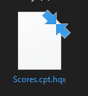
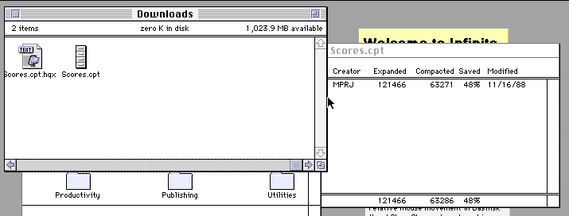
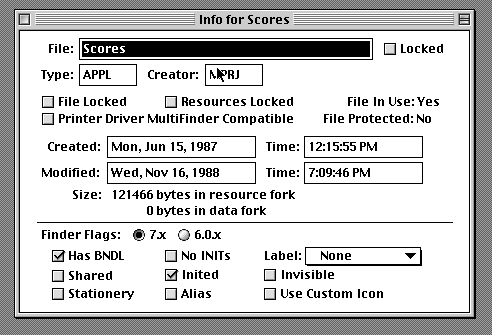

Trying out Scores was a very feasible task. It actually started with me asking on Mastodon whenever I should do malware stuff for MARCHintosh. I got a positive response from people with this idea so the next part was searching for the malware. It ended up being an issue at first because I knew some Mac malware but not anywhere to find them so once again, I went to Mastodon to help with my search.
A user ended up linking to me a copy of the MerryXmas HyperCard virus on the Internet Archive, which in turn linked to a site called "Whacked Mac Archives". There was a section on the site called virii which had live Mac malware such as AIDS, Scores and nVIR but Scores was the first one to catch my eye.
The catch though? The file was gone and dead from this site and not even the Wayback Machine could help me so back to the main page I went for Whacked Mac Archives and saw the site was logically dead, getting no more updates. There were two other sites linked however as other places to go, those being the "Macintosh Security Site" and "Freaks Macintosh Archives". Freaks Macintosh Archives seemed to have the same malware with a few extras, but I still got a 404 with the files being dead. Thankfully, this time the Wayback Machine had the downloads archived from 2008 so I got ahold of the Scores malware!
I planned on trying to find a debugger that was built into Mini vMac or Basilisk II have some sort of debugging thing where I can see stuff happening “internally” as I do stuff but sadly I did not find one.
The file for Scores came in a .cpt.hqx format but Stuffit Expander could open this even though I thought I needed Compact Pro.
 Now will the Scores malware in my hands, it was time to actually try it out! After unstuffing it the file is really weird because when I decompressed it in System 7, I got a MacProject file instead? It was suggested to me that the type and creator codes could have been intentionally changed to prevent an accidental infection so I checked with ResEdit while it was a MacProject file, looked for a BNDL resource and saw that there was one BNDL resource. After a bit of tinkering around with the MacProject file I decided that perhaps the MacProject file *was* the malware but it was not working because of the date the machine was set to the past. I kept checking to see if the Notepad and Scrapbook icons had specific icons under System 7 because if the icons are blank document icons, it is a good indication the system is infected but they never showed up as blank.
Safe to say my first shot was not very successful...